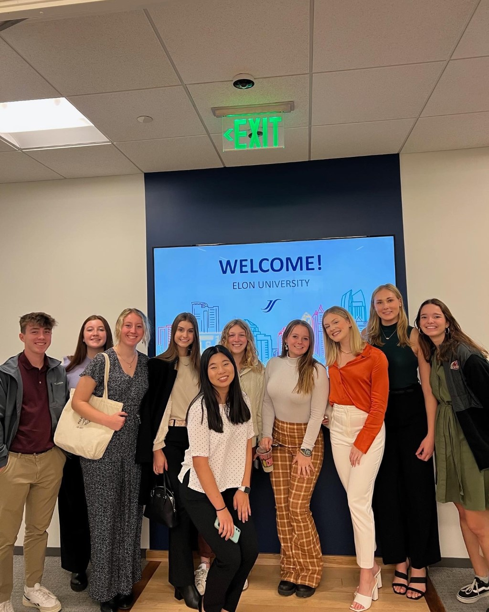
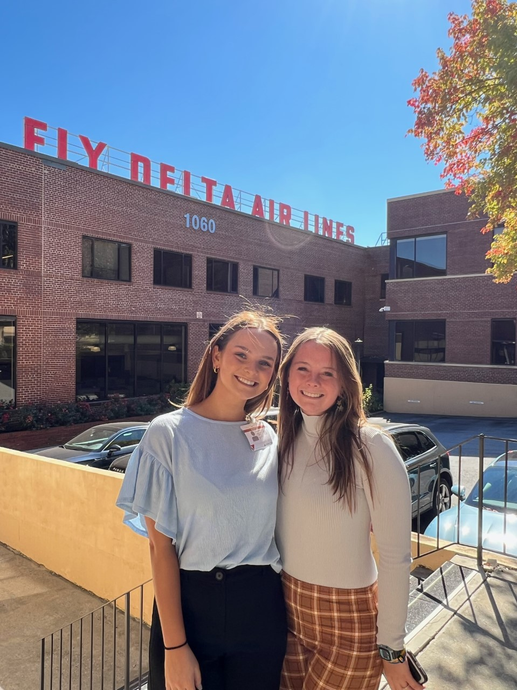
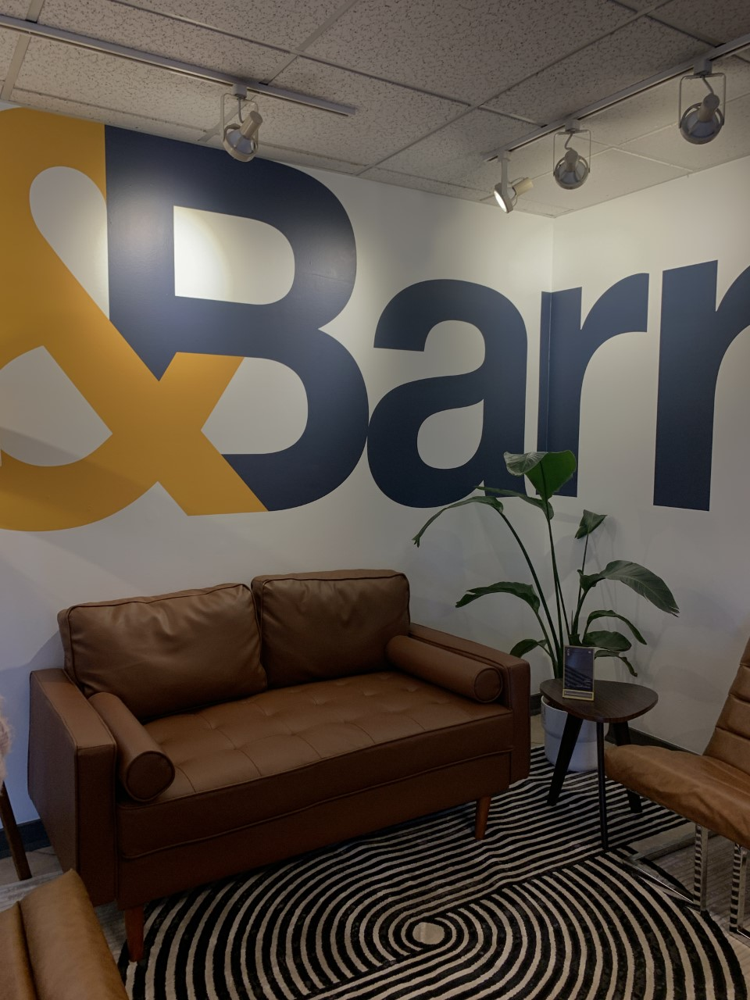
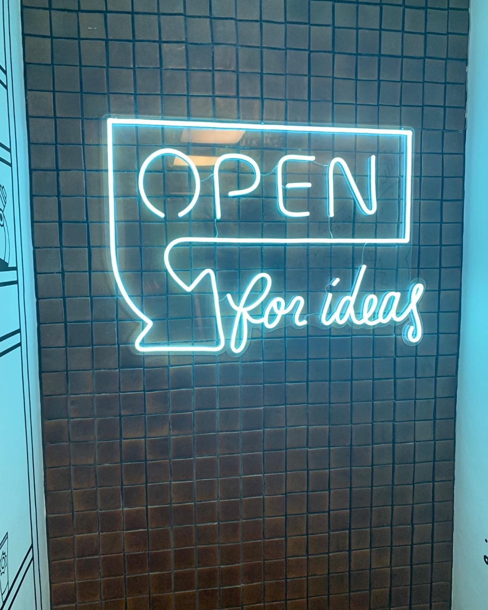

Since I'm a freshman I don't have too many things under "professional life" since I haven't completed any internships, but my experiences as a Communication Fellow here at Elon have introduced me to the professional world of communications. During the first semester at Elon the Communications Fellows traveled to Atlanta in order to check out companies such as Delta Airlines and take a tour of the Mercedes Benz venue. We were able to sit in on a panel and discuss and ask questions about Delta's current campaign/partnership with Starbucks, where when you score double points for skymiles and Starbucks stars! It was really neat to see their thought process!
 
During J-term, the Communications Fellows got to go on a trip down to Florida for 12 days where we visited a soccer stadium, ad agencies, production companies and more! This experience was invaluable and cemented the fact that I wanted to work in the Analytics field. My favorite part of the trip was the Shadow Day where I shadowed the agency, &Barr. I got to work hands on with the analytics and the design teams, and received valuable advice on certifications I should start working on! We also got to do a little bit of exploring during our trip and went to Disney and Universal! I love rollercoasters so this was awesome. Being a part of the Fellows program has provided me with great experiences that will/do help me in the real world. I created a website for this class, but it was created by weebly so I didn't have to do any coding. It's called The Fellows Experience.
 Another thing that is part of my professional life is my job on campus. I work as an Assistant to the Department of Exercise Science. I create content for their Instagram page, reach out to Alumni, help out with bone density X-rays, and do any miscellaneous tasks! I really enjoy working there because I'm able to exercise my creative juices by creating posts or posters, but I'm also involved in a field that I enjoy and am passionate about (Exercise Science).